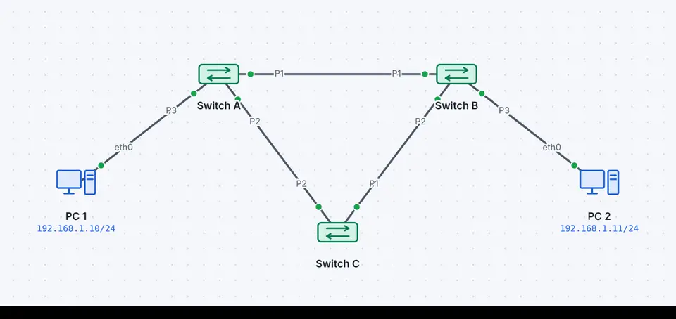
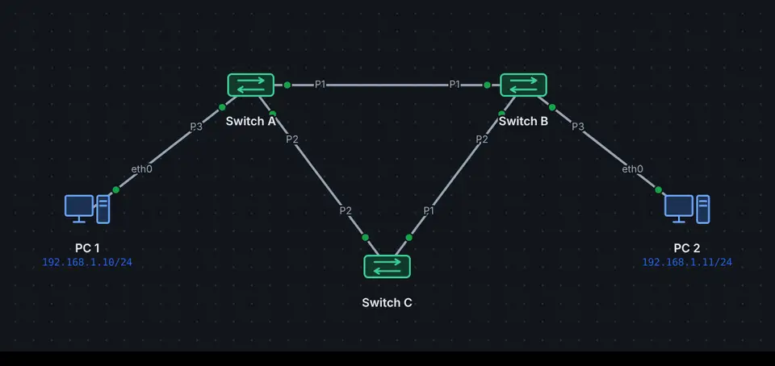
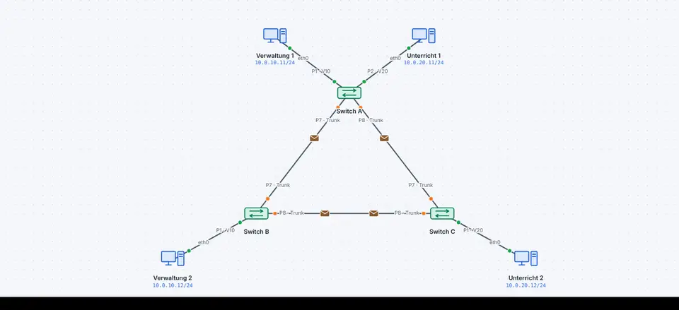
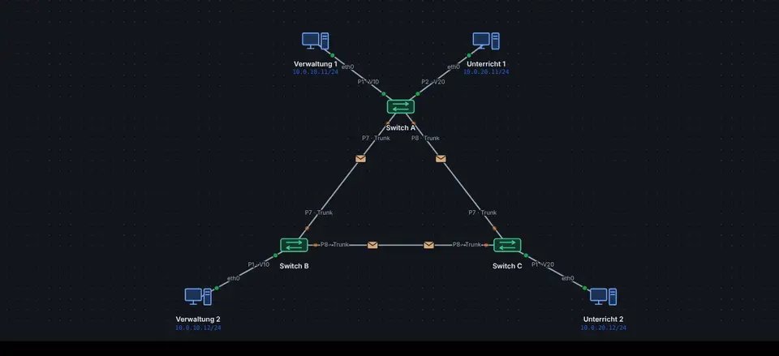

Zwei Kabel zwischen Switches erhöhen die Ausfallsicherheit, bilden aber eine Schleife. Ein Broadcast wird endlos im Kreis geschickt und vervielfacht sich: ein Broadcast-Sturm. Nach Sekunden ist das Netz voll, die MAC-Tabellen springen hin und her.


Zeitlupe Broadcast-Sturm ohne Spanning Tree: Rahmen kreisen ohne Ende
Die Lösung: ein Baum
Das Spanning Tree Protocol macht aus dem vermaschten Netz einen Baum ohne Schleifen:
Die Switches tauschen BPDUs aus und wählen eine Root-Bridge: den Switch mit der kleinsten Bridge-ID (Priorität, dann MAC-Adresse).
Jeder andere Switch bestimmt seinen Root-Port: den Weg mit den geringsten Kosten zur Root.
Auf jeder Leitung gibt es einen Designated Port; alle übrigen Ports werden blockiert.
Fällt ein Kabel aus, rechnen die Switches neu, und ein blockierter Port übernimmt.
Rolle
Zustand
Root-Port
leitet weiter (Richtung Root)
Designated Port
leitet weiter (weg von der Root)
Alternate (blockiert)
leitet nicht weiter, hört nur BPDUs
Mit spanning-tree priority 4096 macht man einen bestimmten Switch (meist im Core) zur Root.
Die BPDU im Rahmen
BPDUs laufen nicht in Ethernet II, sondern in einem IEEE-802.3-Rahmen mit Länge und LLC-Kopf (DSAP und SSAP 0x42) an die Multicast-Adresse 01:80:c2:00:00:00.
Von links nach rechts, in der Reihenfolge, in der die Bytes gesendet werden. Grau gestrichelt: steht in keinem Mitschnitt (Schicht 1 oder Rahmung der Leitung). Zeigen auf ein Feld erklärt es.
Feld
Länge
Wert im Beispiel
Bedeutung
Präambel (Schicht 1)
7 Byte
10101010 × 7
Sieben Byte 10101010: Der Empfänger stellt seinen Takt darauf ein. Gehört zur Bitübertragung.
SFD (Schicht 1)
1 Byte
10101011
Start Frame Delimiter 10101011: Jetzt beginnt der Rahmen.
Ziel-MAC
6 Byte
01:80:c2:00:00:00
An wen? FF:FF:FF:FF:FF:FF ist Broadcast, ein erstes Byte mit gesetztem niedrigsten Bit Multicast.
Quell-MAC
6 Byte
02:00:00:00:01:06
Von wem? Die MAC-Adresse der sendenden Schnittstelle; der Switch lernt sie.
Länge
2 Byte
38
Länge der Nutzdaten in Byte (höchstens 1500). Daran erkennt der Empfänger einen IEEE-802.3-Rahmen mit LLC statt Ethernet II.
DSAP
1 Byte
0x42
Destination Service Access Point (IEEE 802.2 LLC): für wen auf der Gegenseite. 0x42 = Spanning Tree, 0xAA = SNAP folgt.
SSAP
1 Byte
0x42
Source Service Access Point: von welchem Dienst, meist gleich wie DSAP.
Control
1 Byte
0x03
LLC-Steuerung, 0x03 = Unnumbered Information (ohne Bestätigung).
OUI (optional)
3 Byte
Nur bei SNAP (DSAP 0xAA): Organisationskennung, 00-00-00 für EtherType-Werte (RFC 1042).
Typ (SNAP) (optional)
2 Byte
Nur bei SNAP: der EtherType der Nutzdaten, z.B. 0x0800 für IPv4. So tragen WLAN und andere LLC-Netze IP.
Nutzdaten
38–1497 Byte
43 Byte
Die Nutzdaten, z.B. eine Spanning-Tree-BPDU. Kürzere Rahmen werden auf 64 Byte aufgefüllt.
FCS
4 Byte
0x182ad55e
Frame Check Sequence: CRC-32 über den ganzen Rahmen ab Ziel-MAC. Stimmt sie beim Empfänger nicht, verwirft er den Rahmen.
Pause (IFG) (Schicht 1)
12 Byte
Mindestens 12 Byte Pause bis zum nächsten Rahmen (Interframe Gap). Gehört zur Bitübertragung.
Werte: Echter Rahmen aus der Demo «VLAN und Spanning Tree» (Nr. 1, 64 Byte), so zeigt ihn auch die Paketliste in leyoNET.
In leyoNET
Ohne STP erkennt die Simulation den Sturm, zeigt ein Banner mit den betroffenen Geräten und drosselt die Weiterleitung, damit die Seite flüssig bleibt. Mit STP zeigt show spanning-tree Root, Rollen und Zustände; der blockierte Port ist auf der Fläche markiert.
So geht es in leyoNET
Derselbe Text wie in der Hilfe der App (Taste F1).
Spanning Tree (STP)
Redundante Kabel zwischen Switches bilden Schleifen. Ohne STP kreisen Broadcasts darin endlos: ein Broadcast-Sturm, der das Netz lahmlegt. Der Simulator zeigt dann eine Warnung und die betroffenen Geräte.
Mit STP wählen die Switches eine Root Bridge und blockieren einzelne Ports, bis ein Weg ausfällt. Einschalten im Switch unter «Spanning Tree».
Beispiel ansehen


Zeitlupe So sieht es in der Simulation aus: Jeder Punkt ist ein Rahmen auf dem Kabel.VLAN und Spanning Tree
Drei Switches im Ring, zwei VLANs über Trunks.
STP blockiert einen Port (orange), danach erreicht die Verwaltung ihren zweiten Rechner über den Trunk mit 802.1Q-Tag.